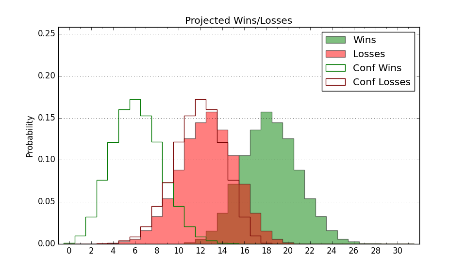

| Home | Game Probabilities | Conferences | Preseason Predictions | Odds Charts | NCAA Tournament |
| City: | University, Mississippi | |
| Conference: | SEC (1st)
| |
| Record: | 0-0 (Conf) 9-0 (Overall) | |
| Ratings: | Comp.: 8.1 (92nd) Net: 6.4 (115th) Off: 104.4 (151st) Def: 98.0 (94th) SoR: 88.1 (10th) |
| Remaining | ||||||
|---|---|---|---|---|---|---|
| Date | Opponent | Win Prob | Pred. | |||
| 12/16 | (N) California (174) | 71.3% | W 72-66 | |||
| 12/19 | Troy (243) | 88.6% | W 77-63 | |||
| 12/23 | (N) Southern Miss (246) | 81.4% | W 73-63 | |||
| 12/31 | Bryant (193) | 84.2% | W 74-62 | |||
| 1/6 | @ Tennessee (12) | 8.4% | L 58-75 | |||
| 1/10 | Florida (34) | 41.2% | L 73-75 | |||
| 1/13 | Vanderbilt (216) | 86.2% | W 75-62 | |||
| 1/17 | @ LSU (129) | 45.0% | L 68-69 | |||
| 1/20 | @ Auburn (18) | 10.6% | L 62-77 | |||
| 1/24 | Arkansas (45) | 45.3% | L 69-71 | |||
| 1/27 | @ Texas A&M (15) | 9.7% | L 62-77 | |||
| 1/30 | Mississippi St. (31) | 40.7% | L 62-65 | |||
| 2/3 | Auburn (18) | 28.8% | L 67-73 | |||
| 2/6 | @ South Carolina (57) | 23.7% | L 63-71 | |||
| 2/13 | @ Kentucky (25) | 14.4% | L 68-81 | |||
| 2/17 | Missouri (80) | 60.5% | W 69-66 | |||
| 2/21 | @ Mississippi St. (31) | 16.8% | L 58-69 | |||
| 2/24 | South Carolina (57) | 51.4% | W 67-66 | |||
| 2/28 | Alabama (10) | 22.9% | L 73-82 | |||
| 3/2 | @ Missouri (80) | 31.0% | L 65-70 | |||
| 3/5 | @ Georgia (108) | 40.7% | L 66-69 | |||
| 3/9 | Texas A&M (15) | 26.9% | L 66-73 | |||
| Previous | Game Score | |||||
| Date | Opponent | Win Prob | Result | Off | Def | Net |
| 11/6 | Alabama St. (307) | 93.9% | W 69-59 | -21.1 | 5.8 | -15.3 |
| 11/10 | Eastern Washington (186) | 83.5% | W 75-64 | -10.7 | 8.5 | -2.2 |
| 11/14 | Detroit (340) | 96.0% | W 70-69 | -6.4 | -23.8 | -30.2 |
| 11/17 | Sam Houston St. (179) | 82.9% | W 70-67 | -2.3 | -10.4 | -12.7 |
| 11/22 | @Temple (149) | 51.8% | W 77-76 | 16.1 | -14.0 | 2.2 |
| 11/28 | North Carolina St. (82) | 61.1% | W 72-52 | 3.6 | 23.5 | 27.0 |
| 12/2 | Memphis (36) | 43.7% | W 80-77 | 5.8 | 3.3 | 9.2 |
| 12/5 | Mount St. Mary's (259) | 90.1% | W 77-68 | 1.3 | -4.9 | -3.6 |
| 12/10 | @UCF (79) | 30.8% | W 70-68 | 10.1 | 1.0 | 11.1 |
| Stats & Trends | |||||
|---|---|---|---|---|---|
| Current | Day | Week | Month | Season | |
| Composite | 8.1 | -0.3 | +1.4 | -3.4 | -3.8 |
| Comp Rank | 92 | -2 | +9 | -27 | -27 |
| Net Efficiency | 6.4 | -0.4 | +2.6 | -1.0 | -- |
| Net Rank | 115 | -4 | +24 | +13 | -- |
| Off Efficiency | 104.4 | -0.1 | +2.5 | +14.3 | -- |
| Off Rank | 151 | -6 | +48 | +135 | -- |
| Def Efficiency | 98.0 | -0.2 | +0.1 | -15.3 | -- |
| Def Rank | 94 | -5 | +5 | -76 | -- |
| SoS Rank | 272 | -1 | +54 | +16 | -- |
| Exp. Wins | 18.4 | -0.0 | +1.3 | +1.0 | +1.2 |
| Exp. Conf Wins | 6.2 | -0.0 | +0.4 | -1.0 | -1.1 |
| Conf Champ Prob | 0.2 | -0.1 | +0.2 | -0.8 | -1.3 |

| Advanced Stats | ||
|---|---|---|
| Stat | Value | Rank |
| Off Eff FG % | 0.499 | 188 |
| Off Ast Ratio | 0.163 | 63 |
| Off ORB% | 0.264 | 219 |
| Off TO Rate | 0.127 | 50 |
| Off FT Ratio | 0.330 | 195 |
| Def Eff FG % | 0.456 | 45 |
| Def Ast Ratio | 0.143 | 206 |
| Def ORB% | 0.321 | 310 |
| Def TO Rate | 0.149 | 197 |
| Def FT Ratio | 0.251 | 39 |